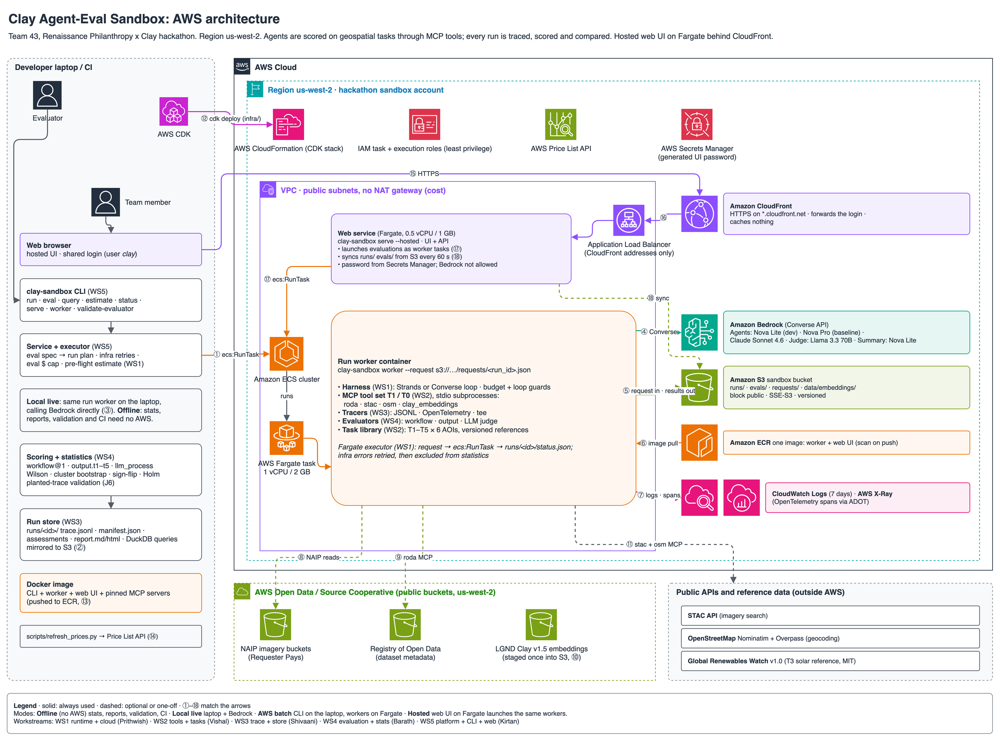

Disaster risk finance
How much to fund after an event
Needs: results checkable against reliable records
↓ ↑ Space · T theme · N notes
Team Treehouse · Clay Agent-Eval Sandbox
One accuracy number hides the wrong area, the invented item and the runaway bill.
“Can an off-the-shelf agent harness, given access to geospatial tools through an MCP connector, reproduce the performance our benchmarks report?” ADB / LGND GeoAI Evals Inception Report, §5.8 (Oct 2026)
0:00–0:15. Hi, we're Team Treehouse, and this is our Clay Agent-Eval Sandbox. AI agents can now search satellite imagery and maps for you, but nobody can tell whether they did it right. A single accuracy number hides the wrong area, the invented item and the runaway bill. The inception report's section 5.8 asks exactly this question.
Why it is real
How much to fund after an event
Needs: results checkable against reliable records
How many assets were damaged
Needs: assets counted one by one, repeatably
Where to invest in resilience
Needs: clear sources, licences and recency
Baseline and monitor funded assets
Needs: a known cost per dataset
Source: ADB / LGND GeoAI Evals Inception Report, Table 5 and §4.2 (Oct 2026).
0:15–0:45. ADB's teams, risk finance, post-disaster needs, the Risk Analytics Explorer and project teams, all need asset data they can check against records, repeat in every country and put a cost on. Agents fail quietly in exactly those places: wrong area or year, invented results, loops and runaway cost. There was no shared way to test for it.
How we fix it
A Bedrock model in a harness calls real MCP tools: AWS Open Data, STAC imagery, OpenStreetMap, Clay embeddings. Every call goes into a JSONL trace with tokens, cost and time.
Step, token, dollar and time limits, plus a loop guard, stop runs cleanly. Infra errors are retried as new attempts and never scored. Every launch shows a cost estimate first.
Workflow (right area, year, tools), output against an answer key, and an LLM judge of the process; configurations compared with confidence intervals.
Run → record → score → compare. Change one thing (model, harness or instructions) and the report shows what it changed.
0:45–1:20. We grade the whole run. Record: a Bedrock model in a harness calls real MCP tools, and every call goes into one trace with tokens, cost and time. Guard: step, dollar, time and loop limits stop runs cleanly, and infrastructure errors are retried, never scored. Score and compare: workflow, output against an answer key, and an LLM judge, with configurations compared using confidence intervals.
Architecture

1:20–1:55. Everything deploys as one AWS CDK stack. People reach the web UI over HTTPS through CloudFront, and the load balancer accepts CloudFront only. Launching an evaluation starts one Fargate worker per run; the agent and its MCP tools run inside it and call Bedrock. Each run's folder lands in S3 and the web service syncs it. One image in ECR serves all of it, and only workers can call Bedrock.
Demo
Custom query “Find helipads and heliports in New York City”, three expected heliports.
Cost per model, then confirm and launch.
The runs stream in from Fargate.
Heliports found, steps, cost, and the trace.
1:55–4:05, switch to the browser. 1) New Run, Custom query: "Find helipads and heliports in New York City", expected answers Downtown Manhattan Heliport, East 34th Street Heliport, West 30th Street Heliport; model Nova Pro, compare with Claude Sonnet. 2) Estimate, confirm, Launch. 3) Show live progress briefly. 4) Switch to tab 2 with the pre-run comparison: which heliports each found, steps, cost, then one run's trace.
By the numbers
Statistics: Wilson intervals, cluster bootstrap over task instances, paired sign-flip tests, Holm correction.
What the scores catch: wrong order, unknown and forbidden tools, unrecovered failures, loops, budget stops and fabricated output.
4:05–4:30. By the numbers: over a thousand automated tests, and nine planted flawed runs the scorers must catch before any score counts. Real tools: 152 thousand Clay tiles, four MCP servers, four Bedrock models with a different-family judge. And it is safe to run: an estimate before every launch, and caps per run and per evaluation.
What changes
4:30–4:45. Today, an agent returns a list and nothing else. With the sandbox, every step is in the trace, area and tool use are checked automatically, and models are compared fairly with error bars and a known cost.
After release
Amazon Bedrock (Nova, Claude, Llama) · Strands Agents · MCP · LGND Clay v1.5 · Python, Pydantic, FastAPI, DuckDB · React 19, TypeScript, Vite · AWS CDK, ECS Fargate, S3, CloudFront, ECR, Secrets Manager.
Every agent step recorded, scored, costed and comparable.
4:45–5:00. Next, we go from measuring agents to choosing them: the harness track runs today, agent profiles are designed, and automatic model choice comes from the performance matrix. Every agent step recorded, scored, costed and comparable. Thank you, happy to take questions.